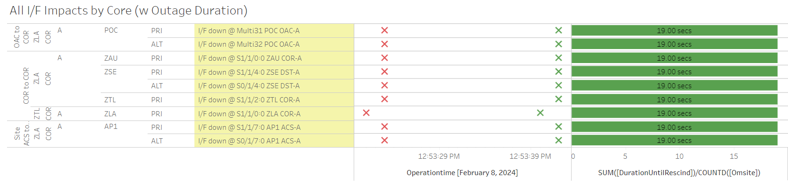

Weekly Highlights 20240207-20240214
CM1 GUS RF Investigation
- 2/7 ~17:03 - CM1 GUS to Maintenance for
C5 KPA Leakageinvestigation; restored to Backup at 2/7 19:55 - 2/8 07:00 - GUS Switchover - S15 - BR1 to Backup / CM1 to Primary for continued monitoring of CM1 RF signal investigation (can only be checked in Primary Mode)
- 2/13 07:02 - GUS Switchover - S15
- BR1 to Primary / CM1 to Backup
to monitor carrierphase divergences after a switchover to Primary; ref LIR 747063624 - 2/15 - GUS Switchover - S15 - CM1 to Primary / BR1 to Backup -- if all is well, this will be complete the RF Investigation
2/8-2/9 - ZSU Subframe Reasonability
- 2/8 02:17 - SE 728 Subframe Reasonability for ZSU with PID WRS Down for ZLA and ZDC C&Vs
- 2/9 02:12 - SE 728 Subframe Reasonability for ZSU with PID WRS Down for ZLA C&V only
2/8 - ZLA Comm Hit
- 2/8 12:53 - Several comms associated with ZLA COR-A took a ~19 second hit

2/10 - SZ1 GUS Fault from Primary (Power Interruption)
- 2/10 04:48 - GUS Switchover - SM9
- SZ1 GUS Faulted from Primary and Ring 1 comms
down hard due to
power interruption that caused stby KPA to go offline; ref LIR 745724924; Control Powered and restored to Backup at 2/10 09:49
2/12 - ZMA WRE-C Fault
- 2/12 12:35 - ZMA WRE-C Faulted with SEs 29, 52, 53, 59 indicating Freq Std; Freq Std had ongoing SE 30 Minor Alarm which cleared after Control Power; restored to Normal at 2/12 13:36
Various Comm Impacts
* Does not include single-line impacts <30 seconds which do not cause an outage
CM1 Comm Events
Notes on CM1 Ring 2 PRI comm
WAAS operations has been working with FTI on CMA NET-2 PRI unreliable line issues. It was discovered there’s was an existing ISR from 5/04/2022 0506-0114 that was never closed. I reopened RMLS #695385532 until FTI has finished replacing this unsupported DS3 line with a Ethernet line revision.
FTI/JMS tier 2 reports new Ethernet equipment has been installed at SACOM pending MR-183177 2/16. FTI is Pending stability and reliable results from the test phase before cutover. WAAS and FTI will work with Lumin/Verizon on a fix as needed basis for any loss of CMA NET-2 circuit issues until new Ethernet line can be delivered.
- 2/7 21:37 - CM1 Ring 2 PRI comms started flapping; last event cleared at 2/7 23:32 (~1316 seconds total)
- 2/8 23:28 - CM1 Ring 2 PRI comms started flapping; last event cleared 2/9 00:19 (~524 seconds total)
- 2/14 09:05 - CM1 Ring 1 ALT / Ring 2 PRI + YFB Ring 2 comms down hard; all lines cleared at 2/14 09:30 (~1465 seconds)
CDB Comm Events
- 2/7 22:34 - CDB Ring 2 comms down hard; line cleared at 2/7 22:38 (~244 seconds)
- 2/9 02:21 - CDB Ring 1 comms down hard; line cleared at 2/9 02:28 (~405 seconds)
Mexico Sites
- 2/8 07:40 - MSD Ring 1 comms down hard; line cleared at 2/8 07:44 (~232 seconds)
- 2/11 01:30 - MSD Ring 1 comms flapping; last event cleared at 2/11 04:18 (~316 seconds total)
- 2/12 18:06 - MMD Ring 1 comms down hard -- OFFLINE; line cleared at 2/12 20:53 (~10051 seconds)
Other Sites
- 2/8 10:41 - NOC OAC-ZDC COR Ring 1 ALT / Ring 2 PRI comms down hard; lines cleared at 2/8 10:43 (~136 seconds)
List of current offline WREs
List of current offline WREs -- ref WAAS Status Monitor
All Depot shipments to Mexico are halted until the customs process can be finalized
- MMX WRE-B - 10/2-... - PCU-B failed; need replacement but first need Maintainer Laptops for configuration
- MMX WRE-A - 9/27-... - PCU-A failed; need replacement but first need Maintainer Laptops for configuration
- MTP WRE-B - 7/21-... - PCU-B failing over and over again; input power tested good; disconnected power for other LRUs in WRE-B until PCU-B can be replaced; PCU-B has apparently been stable since 7/25 00:16 (no further power cycles on PCU)
5/11/23-... - MX Ring 2 Satcom Upgrade
MX WAAS Sites comm upgrades in progress:
- 10/27 - Frequentis has delivered to Tijuana, needs to be connected to FTI delivery
- 11/2 - FTI has initiated coordination with Tijuana to install and test direct connection to Frequentis -- MMD Test on 12/6
Further work needed at each WRS site to complete Ring 2 connection upgrades
FTI-Harris coordinating with SENEAM at TJX to complete end-to-end testing

Major Events